You can also download a PDF copy of this homework assignment.
This homework assignment concerns specifying and making inferences from nonlinear regression models, and methods for accounting for heteroscedasticity.
nls for Linear ModelsBoth the nls and the lm functions can
estimate linear regression models, but their interfaces are
different. The lm function allows us to specify a model
symbolically whereas nls requires us to specify
the model mathematically. In practice we usually use
lm for linear models because it takes care of some of the
intricacies of specifying the model (e.g., indicator variables and
interactions), but in some cases it can be useful to use
nls, particularly if the linear model you are using has a
peculiar parameterization. But I think it can be a useful exercise for
the student to have experience using nls to specify linear
models.1
Here you will use nls to estimate some of the models you
encountered in the previous homework assignment. Note that since all of
these models are linear, you need not worry about specifying good
starting values. You can safely specify values of zero for all starting
values.
The last homework assignment considered a couple of
parameterizations of models for the Dopamine data from the
BSDA package. Below the models are estimated using the
lm function. See the solutions for the previous homework to
see how these models can be written mathematically.
library(BSDA)
m1 <- lm(dbh ~ group, data = Dopamine)
summary(m1)$coefficients Estimate Std. Error t value Pr(>|t|)
(Intercept) 164.27 12.59 13.052 4.059e-12
grouppsychotic 78.33 19.90 3.936 6.587e-04m2 <- lm(dbh ~ -1 + group, data = Dopamine)
summary(m2)$coefficients Estimate Std. Error t value Pr(>|t|)
groupnonpsychotic 164.3 12.59 13.05 4.059e-12
grouppsychotic 242.6 15.41 15.74 8.320e-14For each of these two models, use the nls function to
estimate the model parameters once by specifying an indicator variable
within the model itself (using the == operator), and again
by using either the ifelse function or
the case_when function from the dplyr
package. Show the output of summary for all of these estimated models to
verify that you obtained the same results (there may be minor
differences several places after the decimal). Be sure the estimates are
in the same order in the output of summary. This can be
controlled by the order in which the starting values are specified to
nls.
Solution: The first parameterization can be estimated as follows.
library(dplyr) # for case_when
m <- nls(dbh ~ b0 + b1 * (group == "psychotic"),
data = Dopamine, start = list(b0 = 0, b1 = 0))
summary(m)$coefficients Estimate Std. Error t value Pr(>|t|)
b0 164.27 12.59 13.052 4.059e-12
b1 78.33 19.90 3.936 6.587e-04m <- nls(dbh ~ ifelse(group == "psychotic", b0 + b1, b0),
data = Dopamine, start = list(b0 = 0, b1 = 0))
summary(m)$coefficients Estimate Std. Error t value Pr(>|t|)
b0 164.27 12.59 13.052 4.059e-12
b1 78.33 19.90 3.936 6.587e-04m <- nls(dbh ~ case_when(
group == "psychotic" ~ b0 + b1,
group == "nonpsychotic" ~ b0),
data = Dopamine, start = list(b0 = 0, b1 = 0))
summary(m)$coefficients Estimate Std. Error t value Pr(>|t|)
b0 164.27 12.59 13.052 4.059e-12
b1 78.33 19.90 3.936 6.587e-04The second parameterization can be estimated as follows.
m <- nls(dbh ~ b1 * (group == "psychotic") +
b2 * (group == "nonpsychotic"),
data = Dopamine, start = list(b1 = 0, b2 = 0))
summary(m)$coefficients Estimate Std. Error t value Pr(>|t|)
b1 242.6 15.41 15.74 8.320e-14
b2 164.3 12.59 13.05 4.059e-12m <- nls(dbh ~ ifelse(group == "psychotic", b1, b2),
data = Dopamine, start = list(b1 = 0, b2 = 0))
summary(m)$coefficients Estimate Std. Error t value Pr(>|t|)
b1 242.6 15.41 15.74 8.320e-14
b2 164.3 12.59 13.05 4.059e-12m <- nls(dbh ~ case_when(
group == "psychotic" ~ b1,
group == "nonpsychotic" ~ b2),
data = Dopamine, start = list(b1 = 0, b2 = 0))
summary(m)$coefficients Estimate Std. Error t value Pr(>|t|)
b1 242.6 15.41 15.74 8.320e-14
b2 164.3 12.59 13.05 4.059e-12Another problem in the last homework concerned the
rat data from the ALA package and featured
a couple of different models. Again, see the solutions for the previous
homework to see how these models can be written mathematically.2
m <- lm(weight ~ treatment + week + treatment:week, data = ALA::rat)
summary(m)$coefficients Estimate Std. Error t value Pr(>|t|)
(Intercept) 52.8800 2.648 19.9694 2.758e-41
treatmentthiouracil 4.8200 3.745 1.2871 2.004e-01
treatmentthyroxin -0.7943 4.127 -0.1925 8.477e-01
week 26.4800 1.081 24.4944 2.373e-50
treatmentthiouracil:week -9.4300 1.529 -6.1680 8.257e-09
treatmentthyroxin:week 0.6629 1.685 0.3935 6.946e-01m <- lm(weight ~ treatment:week, data = ALA::rat)
summary(m)$coefficients Estimate Std. Error t value Pr(>|t|)
(Intercept) 54.46 1.6141 33.74 1.829e-66
treatmentcontrol:week 25.95 0.8248 31.47 6.268e-63
treatmentthiouracil:week 18.13 0.8248 21.98 8.733e-46
treatmentthyroxin:week 26.35 0.9207 28.62 3.247e-58As in the previous problem, use the nls function to
estimate the model parameters for each model once by specifying an
indicator variable within the model itself (using the ==
operator), and again by using the case_when function from
the dplyr package (the ifelse function
could be used, but is cumbersome for more than two cases since it
requires multiple and nested ifelse statements). Show the
output of summary for all of these to verify that you obtained the same
results.
Solution: Here is how we can estimate the first
model using nls.
m <- nls(weight ~ b0 + b1 * (treatment == "thiouracil") +
b2*(treatment == "thyroxin") + b3 * week +
b4*(treatment == "thiouracil") * week + b5 * (treatment == "thyroxin") * week,
start = list(b0 = 0, b1 = 0, b2 = 0, b3 = 0, b4 = 0, b5 = 0),
data = ALA::rat)
summary(m)$coefficients Estimate Std. Error t value Pr(>|t|)
b0 52.8800 2.648 19.9694 2.758e-41
b1 4.8200 3.745 1.2871 2.004e-01
b2 -0.7943 4.127 -0.1925 8.477e-01
b3 26.4800 1.081 24.4944 2.373e-50
b4 -9.4300 1.529 -6.1680 8.257e-09
b5 0.6629 1.685 0.3935 6.946e-01m <- nls(weight ~ case_when(
treatment == "control" ~ b0 + b3 * week,
treatment == "thiouracil" ~ b0 + b1 + (b3 + b4) * week,
treatment == "thyroxin" ~ b0 + b2 + (b3 + b5) * week),
start = list(b0 = 0, b1 = 0, b2 = 0, b3 = 0, b4 = 0, b5 = 0),
data = ALA::rat)
summary(m)$coefficients Estimate Std. Error t value Pr(>|t|)
b0 52.8800 2.648 19.9694 2.758e-41
b1 4.8200 3.745 1.2871 2.004e-01
b2 -0.7943 4.127 -0.1925 8.477e-01
b3 26.4800 1.081 24.4944 2.373e-50
b4 -9.4300 1.529 -6.1680 8.257e-09
b5 0.6629 1.685 0.3935 6.946e-01The second model can be estimated as follows.
m <- nls(weight ~ b0 +
b1 * (treatment == "control") * week +
b2 * (treatment == "thiouracil") * week +
b3 * (treatment == "thyroxin") * week,
start = list(b0 = 0, b1 = 0, b2 = 0, b3 = 0),
data = ALA::rat)
summary(m)$coefficients Estimate Std. Error t value Pr(>|t|)
b0 54.46 1.6141 33.74 1.829e-66
b1 25.95 0.8248 31.47 6.268e-63
b2 18.13 0.8248 21.98 8.733e-46
b3 26.35 0.9207 28.62 3.247e-58m <- nls(weight ~ case_when(
treatment == "control" ~ b0 + b1 * week,
treatment == "thiouracil" ~ b0 + b2 * week,
treatment == "thyroxin" ~ b0 + b3 * week),
start = list(b0 = 0, b1 = 0, b2 = 0, b3 = 0),
data = ALA::rat)
summary(m)$coefficients Estimate Std. Error t value Pr(>|t|)
b0 54.46 1.6141 33.74 1.829e-66
b1 25.95 0.8248 31.47 6.268e-63
b2 18.13 0.8248 21.98 8.733e-46
b3 26.35 0.9207 28.62 3.247e-58This problem features using a Michaelis-Menten model similar to that
featured in class. The data frame inhibitor from the
isdals package is from an experiment conducted by
students in a biochemistry course at the University of Copenhagen.3 The first
few observations can be seen below.
library(isdals)
data(inhibitor) # required for this package to make the data available
head(inhibitor) Iconc Sconc RR
1 0 10 0.542
2 0 10 0.763
3 0 25 1.178
4 0 25 1.085
5 0 75 2.265
6 0 75 1.989The variables Sconc and RR are the
substrate concentration and reaction rate, respectively. As in a typical
experiment using this model, assays were conducted at several substrate
concentrations and the reaction rate was observed. But this experiment
also featured introducing an inhibitor at concentrations of 0, 50, and
100 \(\mu\)moles. The variable
Iconc is the inhibitor concentration. The plot below shows
the raw data.
library(ggplot2)
p <- ggplot(inhibitor, aes(x = Sconc, y = RR)) +
theme_minimal() + geom_point() +
facet_wrap(~Iconc, labeller = label_both) +
labs(x = "Substrate Concentration (micro moles)",
y = "Reaction Rate (units unknown)")
plot(p)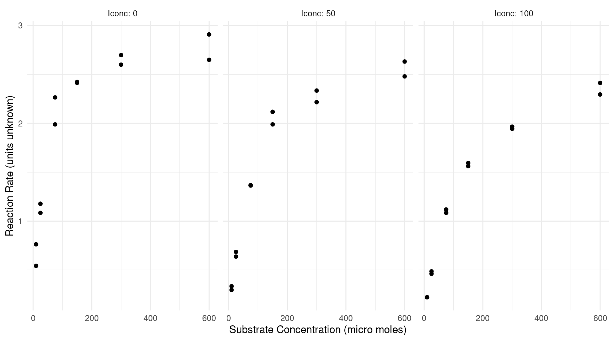 Recall that the basic Michaelis-Menten regression model can be written as \[ E(R_i) = \frac{\alpha s_i}{\lambda + s_i}, \] where \(R_i\) and \(s_i\) are the \(i\)-th observation of reaction rate and substrate concentration, respectively, and \(\alpha\) and \(\lambda\) here denote the “asymptote” and “half-life” parameters, respectively. Here we want to model how the inhibitor concentration “interacts” with the substrate concentration in the sense that one or both parameters of this model depend on the concentration.
Estimate a nonlinear regression model using the nls
function that allows for each of the three levels of concentration to
have a different value of the \(\alpha\) and \(\lambda\) parameters, similar to how the
example from lecture allowed these parameters to be different for cells
that were treated or untreated by puromycin. So your model should
estimate six parameters which we can denote using subscripts as
\(\alpha_0\) and \(\lambda_0\) for the control condition,
\(\alpha_1\) and \(\lambda_1\) for a inhibitor concentration
of 50 \(\mu\)moles, and \(\alpha_2\) and \(\lambda_2\) for an inhibitor concentration
of 100 \(\mu\)moles. Essentially this
is a case-wise model like that featured in class but with three cases
rather than two. I strongly recommend that you use the
case_when function from the dplyr package
to manage the case-wise structure of this model.4 Note that you should
be able to “eyeball” (i.e., guess) the starting values from the plot of
the raw data. Report the parameter estimates using summary.
Finally, plot the model by producing a plot similar to that shown above
but with curves depicting the estimated model.5
Solution: We can estimate the model as follows.
library(dplyr)
m <- nls(RR ~ case_when(
Iconc == 0 ~ alpha0 * Sconc / (lambda0 + Sconc),
Iconc == 50 ~ alpha1 * Sconc / (lambda1 + Sconc),
Iconc == 100 ~ alpha2 * Sconc / (lambda2 + Sconc)),
start = list(alpha0 = 3, lambda0 = 50, alpha1 = 3, lambda1 = 100,
alpha2 = 3, lambda2 = 150), data = inhibitor)
summary(m)$coefficients Estimate Std. Error t value Pr(>|t|)
alpha0 2.981 0.05682 52.47 4.478e-31
lambda0 35.802 2.85973 12.52 1.921e-13
alpha1 2.923 0.08241 35.48 4.677e-26
lambda1 79.188 7.40437 10.69 9.356e-12
alpha2 2.787 0.10459 26.64 1.941e-22
lambda2 117.611 12.84017 9.16 3.392e-10d <- expand.grid(Iconc = c(0, 50, 100), Sconc = seq(0, 600, length = 100))
d$yhat <- predict(m, newdata = d)
p <- ggplot(inhibitor, aes(x = Sconc, y = RR)) +
theme_minimal() + geom_point() + geom_line(aes(y = yhat), data = d) +
facet_wrap(~Iconc, labeller = label_both) +
labs(x = "Substrate Concentration (micro moles)",
y = "Reaction Rate (units unknown)")
plot(p)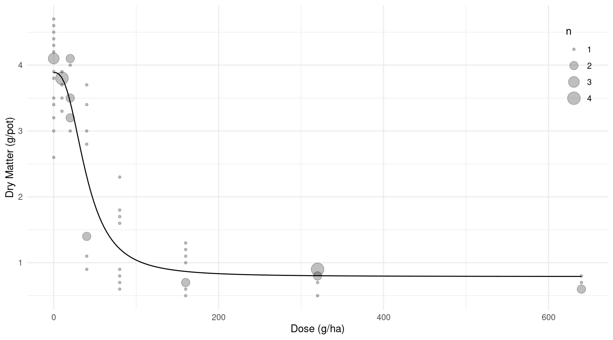
Using summary you can make inferences about the six
model parameters, but they do not provide comparisons of the parameters.
Comparisons can be made using the lincon function from the
trtools package. Use lincon to estimate
the difference between the corresponding Michaelis-Menten
parameters between the control condition and the condition with an
inhibition concentration of 50 \(\mu\)moles (i.e., \(\alpha_1 - \alpha_0\) and \(\lambda_1 - \lambda_0\)), and also between
the control condition and the condition with an inhibition concentration
of 100 \(\mu\)moles (i.e., \(\alpha_2 - \alpha_0\) and \(\lambda_2 - \lambda_0\)).
Solution: The differences between the parameters can be estimated as follows.
library(trtools)
lincon(m, a = c(-1,0,1,0,0,0)) # alpha1 - alpha0 estimate se lower upper tvalue df pvalue
(-1,0,1,0,0,0),0 -0.05766 0.1001 -0.2621 0.1468 -0.576 30 0.5689lincon(m, a = c(-1,0,0,0,1,0)) # alpha2 - alpha0 estimate se lower upper tvalue df pvalue
(-1,0,0,0,1,0),0 -0.1946 0.119 -0.4377 0.04849 -1.635 30 0.1125lincon(m, a = c(0,-1,0,1,0,0)) # lambda1 - lambda0 estimate se lower upper tvalue df pvalue
(0,-1,0,1,0,0),0 43.39 7.937 27.18 59.6 5.466 30 6.25e-06lincon(m, a = c(0,-1,0,0,0,1)) # lambda2 - lambda0 estimate se lower upper tvalue df pvalue
(0,-1,0,0,0,1),0 81.81 13.15 54.94 108.7 6.219 30 7.573e-07Now consider an alternative parameterization of the model where
we write the model case-wise as \[
E(R_i) = \frac{\alpha_0 s_i}{\lambda_0 + s_i}
\] if the \(i\)-th observation
is from the control condition with an inhibitor concentration of zero,
\[
E(R_i) = \frac{(\alpha_0 + \delta_1)s_i}{\lambda_0 + \tau_1 + s_i}
\] if the \(i\)-th observation
is from the condition with an inhibitor concentration of 50 \(\mu\)moles, and \[
E(R_i) = \frac{(\alpha_0 + \delta_2)s_i}{\lambda_0 + \tau_2 + s_i}
\] if the \(i\)-th observation
is from the condition with an inhibitor concentration of 100 \(\mu\)moles The parameters of this model are
related to previous parameterization. We can see that \(\alpha_1 = \alpha_0 + \delta_1\), \(\alpha_2 = \alpha_1 + \delta_2\), \(\lambda_1 = \lambda_0 + \tau_1\), and \(\lambda_2 = \lambda_0 + \tau_2\). Estimate
this model using the nls and give the parameter estimates
using summary. Again, I would strongly recommend you use
the case_when function here. Finally plot the model with
the raw data like you did with the previous model. Your plot should look
the same as that for the previous model.
Solution: We can estimate the model as follows. For the starting values for the new parameters, I used (approximately) the differences between the parameter estimates from the previous model since these new parameters are equal to the differences between the parameters in the previous model.
m <- nls(RR ~ case_when(
Iconc == 0 ~ alpha0 * Sconc / (lambda0 + Sconc),
Iconc == 50 ~ (alpha0 + delta1) * Sconc / (lambda0 + tau1 + Sconc),
Iconc == 100 ~ (alpha0 + delta2) * Sconc / (lambda0 + tau2 + Sconc)),
start = list(alpha0 = 3, lambda0 = 36, delta1 = 0, tau1 = 43, delta2 = 0, tau2 = 82),
data = inhibitor)
summary(m)$coefficients Estimate Std. Error t value Pr(>|t|)
alpha0 2.98110 0.05682 52.469 4.478e-31
lambda0 35.80224 2.85973 12.519 1.921e-13
delta1 -0.05766 0.10010 -0.576 5.689e-01
tau1 43.38622 7.93743 5.466 6.249e-06
delta2 -0.19459 0.11902 -1.635 1.125e-01
tau2 81.80908 13.15477 6.219 7.573e-07d <- expand.grid(Iconc = c(0, 50, 100), Sconc = seq(0, 600, length = 100))
d$yhat <- predict(m, newdata = d)
p <- ggplot(inhibitor, aes(x = Sconc, y = RR)) +
theme_minimal() + geom_point() + geom_line(aes(y = yhat), data = d) +
facet_wrap(~Iconc, labeller = label_both) +
labs(x = "Substrate Concentration (micro moles)",
y = "Reaction Rate (units unknown)")
plot(p)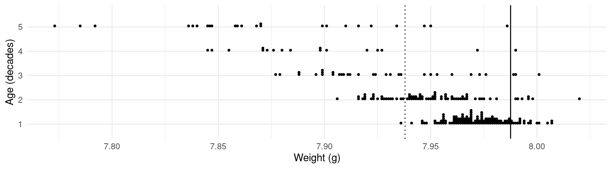 Notice how the estimates of \(\delta_1\), \(\tau_1\), \(\delta_2\), and \(\tau_2\) are the same as those obtained for the differences between the parameters in the second problem based on the original parameterization.
The model you estimated in the previous problem provides
estimates of \(\delta_1 = \alpha_1 -
\alpha_0\), \(\delta_2 = \alpha_2 -
\alpha_0\) as well as \(\tau_1 =
\lambda_1 - \lambda_0\) and \(\tau_2 =
\lambda_2 - \lambda_0\), so you can use just the output from
summary to make comparisons with the control condition. And
you should find that these estimates agree with what you obtained using
lincon and the first model you estimated. Now use
lincon with the model you estimated in the previous problem
to estimate \(\alpha_1 = \alpha_0 +
\delta_1\), \(\alpha_2 = \alpha_0 +
\delta_2\), \(\lambda_1 = \lambda_0 +
\tau_1\), and \(\lambda_2 = \lambda_0 +
\tau_2\). These inferences should agree with what you obtained
from summary in the first problem.
Solution: Here are the estimates.
lincon(m, a = c(1,0,1,0,0,0)) # alpha1 estimate se lower upper tvalue df pvalue
(1,0,1,0,0,0),0 2.923 0.08241 2.755 3.092 35.48 30 4.677e-26lincon(m, a = c(1,0,0,0,1,0)) # alpha2 estimate se lower upper tvalue df pvalue
(1,0,0,0,1,0),0 2.787 0.1046 2.573 3 26.64 30 1.941e-22lincon(m, a = c(0,1,0,1,0,0)) # lambda1 estimate se lower upper tvalue df pvalue
(0,1,0,1,0,0),0 79.19 7.404 64.07 94.31 10.69 30 9.356e-12lincon(m, a = c(0,1,0,0,0,1)) # lambda2 estimate se lower upper tvalue df pvalue
(0,1,0,0,0,1),0 117.6 12.84 91.39 143.8 9.16 30 3.392e-10The models considered above treat the inhibitor concentration as
a categorical variable (i.e., a factor with three levels). Another
approach motivated by the biochemistry of the inhibitor is to let the
\(\lambda\) parameter depend on the
inhibitor concentration so that \[
E(R_i) = \frac{\alpha s_i}{\lambda_0(1 + h_i/\kappa) + s_i},
\] where \(h_i\) is the
inhibitor concentration for the \(i\)-th observation. This model has three
parameters: \(\alpha\), \(\lambda_0\), and \(\kappa\). Here the inhibitor does not
affect the asymptote (\(\alpha\)), but
the half-life parameter is a linear function of the inhibitor
concentration.6 Here \(\lambda_0\) is the value of the half-life
parameter when the inhibitor concentration is zero, and \(\kappa\) is the inhibitor concentration
necessary to double the half-life parameter from this value.7 Estimate
this nonlinear regression model and report the parameter estimates and
their confidence intervals using summary.8 Finally plot the model
with the raw data like you did with the previous models.
Solution: (Note: I made a mistake here in that I
asked you to get confidence intervals using summary, which
it does not provide. You can get confidence intervals using
confint, but since the instructions were unclear I did not
require the confidence intervals.) To get a starting value for \(\kappa\) I used the approximate estimates
of \(\lambda_0\) and \(\lambda_1\) from the first model and then
solved for \(\kappa\) in \(79.2 = 35.8(1 + 50/\kappa)\) which gives a
starting value of \(\kappa \approx
41.24\). For the starting value for \(\alpha\) is just guessed from the plot.
m <- nls(RR ~ alpha * Sconc / (lambda0 * (1 + Iconc / kappa) + Sconc),
data = inhibitor, start = list(alpha = 3, lambda0 = 36, kappa = 41))
summary(m)$coefficients Estimate Std. Error t value Pr(>|t|)
alpha 2.938 0.04308 68.21 4.260e-37
lambda0 33.993 2.39657 14.18 1.342e-15
kappa 34.845 3.27762 10.63 3.421e-12d <- expand.grid(Iconc = c(0, 50, 100), Sconc = seq(0, 600, length = 100))
d$yhat <- predict(m, newdata = d)
p <- ggplot(inhibitor, aes(x = Sconc, y = RR)) +
theme_minimal() + geom_point() + geom_line(aes(y = yhat), data = d) +
facet_wrap(~Iconc, labeller = label_both) +
labs(x = "Substrate Concentration (micro moles)",
y = "Reaction Rate (units unknown)")
plot(p)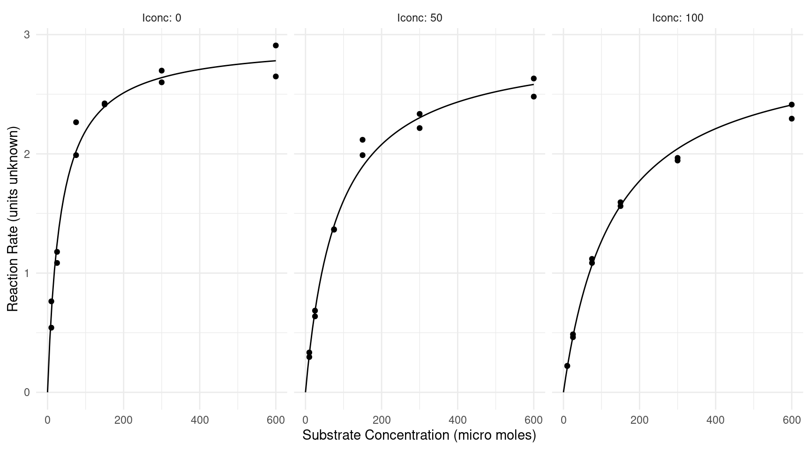
You might wonder how we might choose between this model and the previous model (although there are two parameterizations you considered earlier, they are effectively the same model). It can be shown that this model is a special case of the previous model where the \(\alpha\) parameters are assumed to be the same regardless of the inhibitor concentration, and where \(\lambda\) is assumed to be a linear function of the inhibitor concentration rather than just different for the three levels of inhibitor of concentration. One approach is a goodness-of-fit test where these constraints on the parameters form a null hypothesis.
m.full <- nls(RR ~ case_when(
Iconc == 0 ~ alpha0 * Sconc / (lambda0 + Sconc),
Iconc == 50 ~ alpha1 * Sconc / (lambda1 + Sconc),
Iconc == 100 ~ alpha2 * Sconc / (lambda2 + Sconc)),
start = list(alpha0 = 3, lambda0 = 50, alpha1 = 3, lambda1 = 100,
alpha2 = 3, lambda2 = 150), data = inhibitor)
m.null <- nls(RR ~ alpha * Sconc / (lambda0 * (1 + Iconc / kappa) + Sconc),
data = inhibitor, start = list(alpha = 3, lambda0 = 36, kappa = 41))
anova(m.full, m.null)Analysis of Variance Table
Model 1: RR ~ case_when(Iconc == 0 ~ alpha0 * Sconc/(lambda0 + Sconc), Iconc == 50 ~ alpha1 * Sconc/(lambda1 + Sconc), Iconc == 100 ~ alpha2 * Sconc/(lambda2 + Sconc))
Model 2: RR ~ alpha * Sconc/(lambda0 * (1 + Iconc/kappa) + Sconc)
Res.Df Res.Sum Sq Df Sum Sq F value Pr(>F)
1 30 0.248
2 33 0.274 -3 -0.0262 1.06 0.38The test is not significant, so the latter simpler model is not rejected (although a larger sample size resulting in a more powerful test might reject it). Another approach that we will discuss later is to use the Akaike’s Information Criterion (AIC) where a “better” model has a smaller AIC value (we will discuss what we mean by “better” later).
AIC(m.full)[1] -63.03AIC(m.null)[1] -65.41Here AIC favors (slightly) the simpler model. Again, it is possible that a larger sample size would reveal that the more complex model is a better fit to the data (which can happen as there are more data to estimate the more complex model). But in practice something like using AIC can be helpful to justify using a given model based on the design and data we have.
The data frame snowgeese from the alr3
package is from an unpublished study of aerial survey methods for
estimating the number of snow geese (Anser caerulescens) in
their summer range areas west of Hudson Bay in Canada.9 Counts were made
separately by two observers from an aircraft that flew near flocks of
geese. For comparison, an exact count of the number of geese in the
flock was also obtained from a photograph. The first few observations
can be seen below.
library(alr3)
head(snowgeese) photo obs1 obs2
1 56 50 40
2 38 25 30
3 25 30 40
4 48 35 45
5 38 25 30
6 22 20 20Note: To install the alr3 package use
install.packages("alr3", repos = "http://R-Forge.R-project.org")
since it is no longer available on the Comprehensive R Archive Network
(CRAN) repository, which is the default for
install.packages.10 The variable photo is the
exact count of the number of geese in a flock while obs1
and obs2 are the visual counts from the two observers. To
plot and model these data they need to be reshaped into “long form” so
that we have one observer count in each row. This can be done as
follows.
library(dplyr)
library(tidyr)
goosecount <- snowgeese %>% mutate(flock = 1:n()) %>%
pivot_longer(c(obs1, obs2), names_to = "observer", values_to = "count")
head(goosecount)# A tibble: 6 × 4
photo flock observer count
<int> <int> <chr> <int>
1 56 1 obs1 50
2 56 1 obs2 40
3 38 2 obs1 25
4 38 2 obs2 30
5 25 3 obs1 30
6 25 3 obs2 40Here is a plot of these data.
library(ggplot2)
p <- ggplot(goosecount, aes(x = photo, y = count, color = observer)) +
theme_minimal() + geom_point(alpha = 0.5) +
labs(x = "Photo Count", y = "Observer Count", color = "Observer") +
theme(legend.position = c(0.2, 0.8))
plot(p)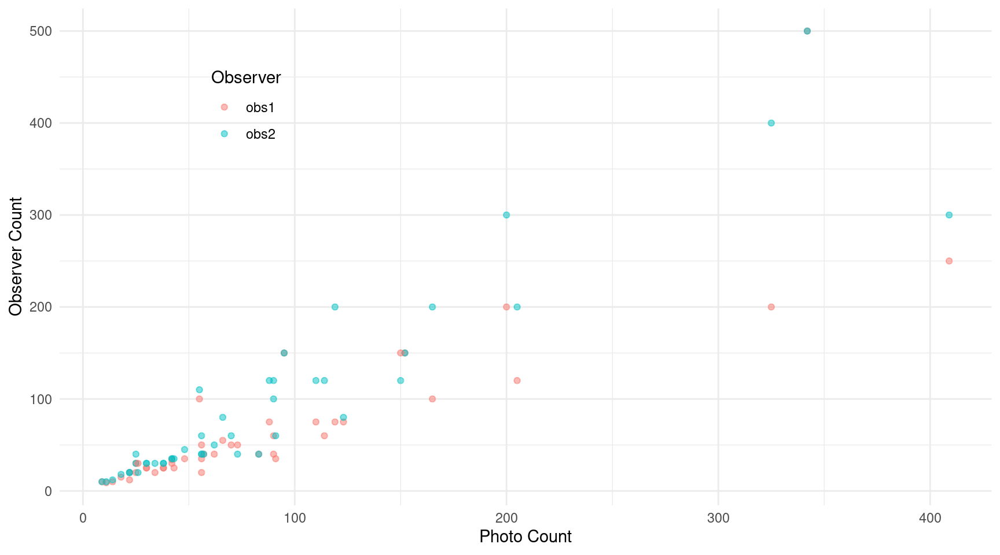 The goal here is to use a regression model to investigate the accuracy (or lack thereof) of using human observers in aerial surveys to estimate the size of snow geese flocks.
Here you will use a model like that used for the
biomass data featured in lecture. The model can be written
as \[
E(Y_i) =
\begin{cases}
\beta_1 x_i, & \text{if the $i$-th observation is from observer 1},
\\
\beta_2 x_i, & \text{if the $i$-th observation is from observer 2},
\end{cases}
\] where \(Y_i\) is the observer
count and \(x_i\) is the photo count.
See the lecture notes for how to specify this model. Estimate this model
and give the parameter estimates using summary. Also plot
the model with the raw data.
Solution: We can estimate this model as follows.
m <- lm(count ~ -1 + photo:observer, data = goosecount)
summary(m)$coefficients Estimate Std. Error t value Pr(>|t|)
photo:observerobs1 0.8218 0.05003 16.43 1.536e-28
photo:observerobs2 1.0875 0.05003 21.74 3.857e-37Here is a plot of the model.
d <- expand.grid(observer = c("obs1","obs2"),
photo = seq(0, 410, length = 100))
d$yhat <- predict(m, newdata = d)
p <- ggplot(goosecount, aes(x = photo, y = count, color = observer)) +
theme_minimal() + geom_point(alpha = 0.5) +
geom_line(aes(y = yhat), data = d) +
labs(x = "Photo Count", y = "Observer Count", color = "Observer") +
theme(legend.position = c(0.2, 0.8))
plot(p)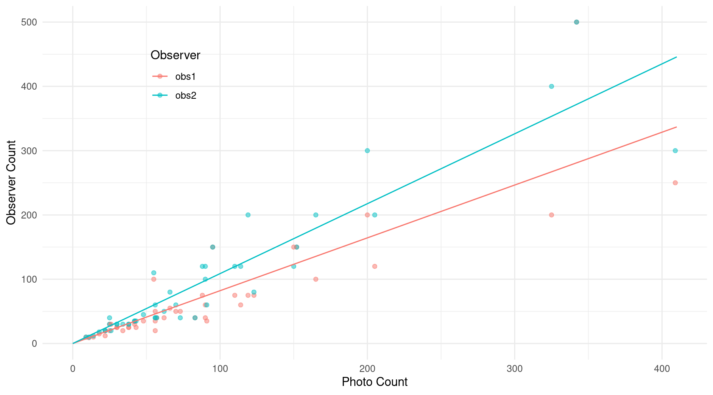
Using the model you estimated estimated above, determine if there
is a statistically significant difference between \(\beta_1\) and \(\beta_2\) using the lincon
function. Also conduct a test of the null hypothesis \(\beta_1 = 1\), and then again for the null
hypothesis \(\beta_2 = 1\). The reason
why the null hypotheses \(\beta_1 = 1\)
and \(\beta_2 = 1\) are interesting
here is that if we can show that the slope of the line is greater/less
than one then we can show that the observers tend to
overestimate/underestimate the the size of a flock. You can test these
hypotheses one of two ways: use the lincon function (hint:
use the b argument for the lincon function and
note that, for example, \(\beta_1 = 1\)
can also be written as \(\beta_1 - 1 =
0\)), or use a confidence interval to conduct the test. For each
test be sure to state your conclusion for each test (i.e., reject or do
not reject the null hypothesis). Use a significance level of \(\alpha\) = 0.05.
Solution: We can test the difference between \(\beta_1\) and \(\beta_2\) as follows.
lincon(m, a = c(-1,1)) # beta2 - beta1 estimate se lower upper tvalue df pvalue
(-1,1),0 0.2657 0.07076 0.1251 0.4063 3.755 88 0.0003102The slopes are significantly different. You can also do that using the emmeans package as follows.
library(emmeans)
pairs(emtrends(m, ~observer, var = "photo"), reverse = TRUE, infer = TRUE) contrast estimate SE df lower.CL upper.CL t.ratio p.value
obs2 - obs1 0.266 0.0708 88 0.125 0.406 3.755 0.0003
Confidence level used: 0.95 And here is another approach, which is a bit more convoluted, but can
be useful in some circumstances. First we can estimate the expected
response for each observer at one unit of photo apart.
emmeans(m, ~photo*observer,
at = list(photo = c(2,1))) photo observer emmean SE df lower.CL upper.CL
2 obs1 1.644 0.10 88 1.445 1.842
1 obs1 0.822 0.05 88 0.722 0.921
2 obs2 2.175 0.10 88 1.976 2.374
1 obs2 1.087 0.05 88 0.988 1.187
Confidence level used: 0.95 Now we pass that to pairs and specify
by = observer so that the pairwise comparison is within
each observer.
pairs(emmeans(m, ~photo*observer,
at = list(photo = c(2,1))), by = "observer")observer = obs1:
contrast estimate SE df t.ratio p.value
photo2 - photo1 0.822 0.05 88 16.425 <.0001
observer = obs2:
contrast estimate SE df t.ratio p.value
photo2 - photo1 1.087 0.05 88 21.736 <.0001The we pass that to pairs and specify
by = NULL to get rid of the grouping to compute the
difference of differences to get the comparison of the slopes.
pairs(pairs(emmeans(m, ~photo*observer,
at = list(photo = c(2,1))), by = "observer"), by = NULL, reverse = TRUE) contrast estimate SE df t.ratio p.value
(photo2 - photo1 obs2) - (photo2 - photo1 obs1) 0.266 0.0708 88 3.755 0.0003I also specified reverse = TRUE to get the difference in
the same direction as before. Again, it is very convoluted, but it does
demonstrate some tricks you can do with the emmeans
package.
Here is how to use lincon to test the null hypothesis
that \(\beta_1 = 1\) and again for
\(\beta_2 = 1\).
lincon(m, a = c(1,0), b = -1) # H0: beta1 - 1 = 0 estimate se lower upper tvalue df pvalue
(1,0),-1 -0.1782 0.05003 -0.2776 -0.07878 -3.562 88 0.000597lincon(m, a = c(0,1), b = -1) # H0: beta2 - 1 = 0 estimate se lower upper tvalue df pvalue
(0,1),-1 0.08751 0.05003 -0.01192 0.1869 1.749 88 0.08377So at the \(\alpha\) = 0.05 significance level, the first slope for the first observer is significantly below one, showing a tendency to underestimate the flock size. The slope for the second observer is not significantly different from zero. Alternatively we can just look at the confidence intervals for \(\beta_1\) and \(\beta_2\).
cbind(summary(m)$coefficients, confint(m)) Estimate Std. Error t value Pr(>|t|) 2.5 % 97.5 %
photo:observerobs1 0.8218 0.05003 16.43 1.536e-28 0.7224 0.9212
photo:observerobs2 1.0875 0.05003 21.74 3.857e-37 0.9881 1.1869The confidence interval for \(\beta_1\) does not contain one, so we reject that null hypothesis, but the confidence interval for \(\beta_2\) does contain one, so we do not reject that null hypothesis.
As with the biomass data, these data show
considerable heteroscedasticity. As shown in lecture, use an iteratively
weighted least squares approach assuming that \(\text{Var}(Y_i) \propto E(Y_i)^p\) for some
value of \(p\) to determine your
weights. Try different values of \(p\)
and decide what you think is a reasonable value of \(p\) to address the heteroscedasticity based
on a plot of the studentized residuals against the predicted values.
Provide your residual plot for that value of \(p\), and then repeat what you did in the
previous problem using estimates obtained using the iteratively weighted
least squares with your choice of \(p\).
Solution: Here is the iteratively weighted least squares algorithm for \(p = 2\), which is the value I thought looked reasonable.
goosecount$w <- 1
for (i in 1:10) {
m <- lm(count ~ -1 + photo:observer, data = goosecount, weights = w)
goosecount$w <- 1 / predict(m)^2
}And here is the residual plot.
goosecount$yhat <- predict(m)
goosecount$residual <- rstudent(m)
p <- ggplot(goosecount, aes(x = yhat, y = residual)) + theme_minimal() +
geom_point() + labs(x = "Predicted Value", y = "Studentized Residual")
plot(p)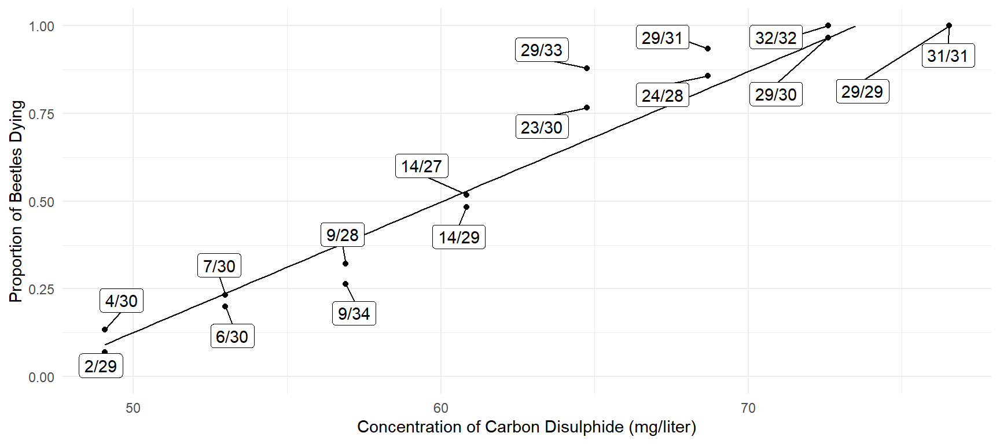 Here the variability of the residuals seems relatively uniform. Compare this with what we get when we do not use weights.
m.ols <- lm(count ~ -1 + photo:observer, data = goosecount)
goosecount$yhat <- predict(m.ols)
goosecount$residual <- rstudent(m.ols)
p <- ggplot(goosecount, aes(x = yhat, y = residual)) + theme_minimal() +
geom_point() + labs(x = "Predicted Value", y = "Studentized Residual")
plot(p)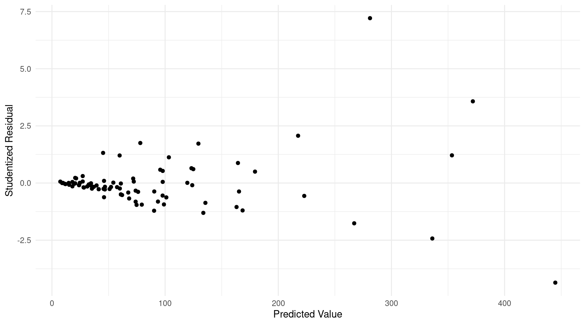 Below I repeat the inferences concerning \(\beta_1\) and \(\beta_2\).
summary(m)$coefficients Estimate Std. Error t value Pr(>|t|)
photo:observerobs1 0.7886 0.04066 19.4 1.561e-33
photo:observerobs2 1.0150 0.05233 19.4 1.561e-33lincon(m, a = c(-1,1)) # beta2 - beta1 estimate se lower upper tvalue df pvalue
(-1,1),0 0.2264 0.06626 0.09468 0.3581 3.416 88 0.0009633lincon(m, a = c(1,0), b = -1) # H0: beta1 - 1 = 0 estimate se lower upper tvalue df pvalue
(1,0),-1 -0.2114 0.04066 -0.2922 -0.1306 -5.2 88 1.284e-06lincon(m, a = c(0,1), b = -1) # H0: beta2 - 1 = 0 estimate se lower upper tvalue df pvalue
(0,1),-1 0.01496 0.05233 -0.08902 0.1189 0.286 88 0.7756There are no changes in significance, but the estimates have changed when using weights.
The data frame ironretention from the
trtools package is from a randomized experiment on the
retention of two iron ions, ferrous (Fe2+) and ferric (Fe3+),
administered to mice at three different concentrations (0.3, 1.2, and
10.2 millimolars).11 The response variable is the percent of
iron retained. The data are shown in the plot below.12
library(trtools)
library(ggplot2)
p <- ggplot(ironretention, aes(x = factor(concentration), y = retention, color = ion)) +
geom_point(alpha = 0.5, position = position_dodge(width = 0.25)) +
labs(x = "Concentration (millimolars)",
y = "Percent Iron Retained", color = "Iron Ion") +
theme_minimal() + theme(legend.pos = c(0.9, 0.8))
plot(p)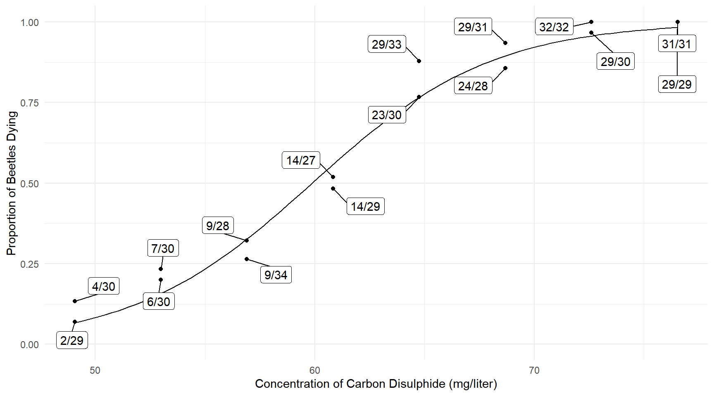 Some descriptive statistics for these data can be obtained as follows.
library(dplyr)
ironretention %>% group_by(concentration, ion) %>%
summarize(mean = mean(retention), sd = sd(retention), obs = n())# A tibble: 6 × 5
# Groups: concentration [3]
concentration ion mean sd obs
<dbl> <chr> <dbl> <dbl> <int>
1 0.3 ferric 11.8 7.03 18
2 0.3 ferrous 12.6 6.08 18
3 1.2 ferric 8.20 5.45 18
4 1.2 ferrous 9.63 6.69 18
5 10.2 ferric 3.70 2.03 18
6 10.2 ferrous 5.94 2.81 18Notice that the variability of the observations of percent iron retention tends to be higher when the mean retention is higher.
In what follows we will treat concentration as a categorical
variable. We can see that it is a numeric variable in the data frame
using str (structure).
str(ironretention)'data.frame': 108 obs. of 3 variables:
$ retention : num 2.71 6.38 9.56 10.62 17.9 ...
$ concentration: num 0.3 0.3 0.3 0.3 0.3 0.3 1.2 1.2 1.2 1.2 ...
$ ion : chr "ferrous" "ferrous" "ferrous" "ferrous" ...We can use the following code to create a variable concf
which is a factor created from the variable
concentration.
ironretention$concf <- factor(ironretention$concentration)That concf is a factor can be confirmed by using
str(ironretention).13 In what follows you will start with the
following linear model estimated by (ordinary/unweighted) least
squares.
m <- lm(retention ~ concf + ion + concf:ion, data = ironretention)
summary(m)$coefficients Estimate Std. Error t value Pr(>|t|)
(Intercept) 11.7500 1.265 9.2882 3.061e-15
concf1.2 -3.5461 1.789 -1.9821 5.015e-02
concf10.2 -8.0511 1.789 -4.5002 1.805e-05
ionferrous 0.8894 1.789 0.4972 6.201e-01
concf1.2:ionferrous 0.5389 2.530 0.2130 8.318e-01
concf10.2:ionferrous 1.3483 2.530 0.5329 5.952e-01Note that this model can be written as \[ E(Y_i) = \beta_0 + \beta_1 x_{i1} + \beta_2 x_{i2} + \beta_3 x_{i3} + \beta_4 x_{i4} + \beta_5 x_{i5}, \] where \(Y_i\) is the \(i\)-th observation of iron retention, \[ x_{i1} = \begin{cases} 1, & \text{if the $i$-th observation of concentration is 1.2}, \\ 0, & \text{otherwise}, \end{cases} \] \[ x_{i2} = \begin{cases} 1, & \text{if the $i$-th observation of concentration is 10.2}, \\ 0, & \text{otherwise}, \end{cases} \] \[ x_{i3} = \begin{cases} 1, & \text{if the $i$-th observation is iron ion is ferrous}, \\ 0, & \text{otherwise}, \end{cases} \] \(x_{i4} = x_{i1}x_{i3}\) and \(x_{i5} = x_{i2}x_{i3}\). So the model can be written case-wise as \[ E(Y_i) = \begin{cases} \beta_0, & \text{if the concentration is 0.3 and the ion is ferric}, \\ \beta_0 + \beta_1, & \text{if the concentration is 1.2 and the ion is ferric}, \\ \beta_0 + \beta_2, & \text{if the concentration is 10.2 and the ion is ferric}, \\ \beta_0 + \beta_3, & \text{if the concentration is 0.3 and the ion is ferrous}, \\ \beta_0 + \beta_1 + \beta_3 + \beta_4, & \text{if the concentration is 1.2 and the ion is ferrous}, \\ \beta_0 + \beta_2 + \beta_3 + \beta_5, & \text{if the concentration is 10.2 and the ion is ferrous}. \end{cases} \] This model specifies an interaction between concentration and ion so that the difference in the expected iron retention between the two ions can be different at each of the three concentrations.14
Based on the model defined above, use either the
contrast function from the trtools package
or functions from the emmeans package to estimate (a)
the expected iron retention at each of the six combinations of
concentration and ion and (b) the difference in the expected
iron retention between the two ions at each of the three concentrations
(i.e., the difference between ferrous and ferric at concentrations of
0.3, 1.2, and 10.2 millimolars).
Solution: First I will estimate the expected iron
retention, both with contrast and also
emmeans.
trtools::contrast(m, a = list(concf = c("0.3","0.3","1.2","1.2","10.2","10.2"),
ion = c("ferric","ferrous","ferric","ferrous","ferric","ferrous")),
cnames = c("ferric,0.3","ferrous,0.3","ferric,1.2","ferrous,1.2",
"ferric,10.2","ferrous,10.2")) estimate se lower upper tvalue df pvalue
ferric,0.3 11.750 1.265 9.241 14.259 9.288 102 3.061e-15
ferrous,0.3 12.639 1.265 10.130 15.149 9.991 102 8.511e-17
ferric,1.2 8.204 1.265 5.695 10.713 6.485 102 3.220e-09
ferrous,1.2 9.632 1.265 7.123 12.141 7.614 102 1.386e-11
ferric,10.2 3.699 1.265 1.190 6.208 2.924 102 4.259e-03
ferrous,10.2 5.937 1.265 3.427 8.446 4.693 102 8.400e-06emmeans(m, ~ion*concf) ion concf emmean SE df lower.CL upper.CL
ferric 0.3 11.75 1.26 102 9.24 14.26
ferrous 0.3 12.64 1.26 102 10.13 15.15
ferric 1.2 8.20 1.26 102 5.70 10.71
ferrous 1.2 9.63 1.26 102 7.12 12.14
ferric 10.2 3.70 1.26 102 1.19 6.21
ferrous 10.2 5.94 1.26 102 3.43 8.45
Confidence level used: 0.95 Now I will estimate the difference in expected iron retention between the two ions.
trtools::contrast(m,
a = list(concf = c("0.3","1.2","10.2"), ion = "ferrous"),
b = list(concf = c("0.3","1.2","10.2"), ion = "ferric"),
cnames = c(0.3, 1.2, 10.2)) estimate se lower upper tvalue df pvalue
0.3 0.8894 1.789 -2.659 4.438 0.4972 102 0.6201
1.2 1.4283 1.789 -2.120 4.977 0.7984 102 0.4265
10.2 2.2378 1.789 -1.311 5.786 1.2508 102 0.2139pairs(emmeans(m, ~ion*concf), by = "concf", infer = TRUE, reverse = TRUE)concf = 0.3:
contrast estimate SE df lower.CL upper.CL t.ratio p.value
ferrous - ferric 0.889 1.79 102 -2.66 4.44 0.497 0.6201
concf = 1.2:
contrast estimate SE df lower.CL upper.CL t.ratio p.value
ferrous - ferric 1.428 1.79 102 -2.12 4.98 0.798 0.4265
concf = 10.2:
contrast estimate SE df lower.CL upper.CL t.ratio p.value
ferrous - ferric 2.238 1.79 102 -1.31 5.79 1.251 0.2139
Confidence level used: 0.95 Use a residual plot to check for heteroscedasticity. Comment briefly on if you believe there is evidence of heteroscedasticity and why. Be sure to include your plot.
Solution: Here is the residual plot.
ironretention$yhat <- predict(m)
ironretention$residual <- rstudent(m)
p <- ggplot(ironretention, aes(x = yhat, y = residual)) + theme_minimal() +
geom_jitter(height = 0, width = 0.1, alpha = 0.5) +
labs(x = "Predicted Value", y = "Studentized Residual")
plot(p)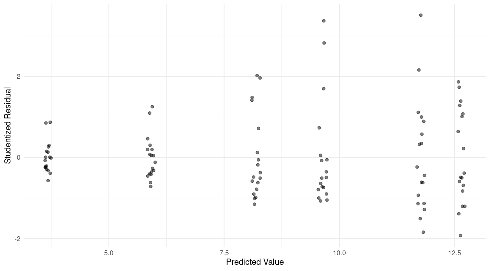
Note that I used geom_jitter to avoid so many overlapping
points. Heteroscedasticity is evident from the non-constant variability
of the residuals. The variability tends to increase with the predicted
value.
In models where the response variable is a percent so that \(0 \le Y_i \le 100\) as it is here, it has been suggested that an appropriate variance structure might be \[ \text{Var}(Y_i) \propto [E(Y_i)/100]^p[1-E(Y_i)/100]^p, \] where \(p \ge 1\).15 Use an iteratively weighted least squares algorithm similar to that we used in class, but specify your weights so that they are the reciprocal of \([E(Y_i)/100]^p[1-E(Y_i)/100]^p\) where each \(E(Y_i)\) is estimated using \(\hat{y}_i\) so that \[ w_i = \frac{1}{(\hat{y}_i/100)^p(1-\hat{y}_i/100)^p}. \] Be careful that you compute the weights correctly.16 Try this for values of \(p\) of 1, 2, 3, 4, and 5.17 For each of \(p\) produce a plot of the studentized residuals against the predicted values. Comment briefly on what you might think might be an appropriate value (or values) of \(p\) to produce appropriate weights to address any heteroscedasticity. Then using what you believe is the best value of \(p\) to address any heteroscedasticity, estimate the model using weighted least squares based on that value of \(p\) and repeat what you did in the first problem. Compare the estimates and standard errors of these results with those you did before, and comment briefly on if or how they changed.
Solution: For fun I will use a loop to create all five plots.
for (p in 1:5) {
ironretention$w <- 1
for (i in 1:10) {
m <- lm(retention ~ concf + ion + concf:ion,
data = ironretention, weights = w)
ironretention$yhat <- predict(m)
ironretention$w <- with(ironretention, 1 / ((yhat/100)^p * (1-yhat/100)^p))
}
ironretention$residual <- rstudent(m)
p <- ggplot(ironretention, aes(x = yhat, y = residual)) + theme_minimal() +
geom_jitter(height = 0, width = 0.1, alpha = 0.5) +
labs(x = "Predicted Value", y = "Studentized Residual") +
ggtitle(paste("p =", p))
plot(p)
}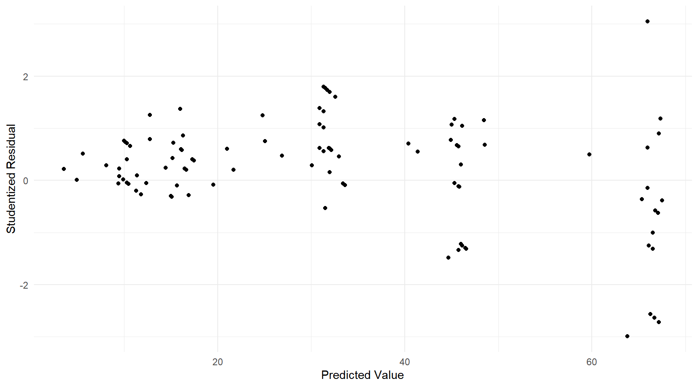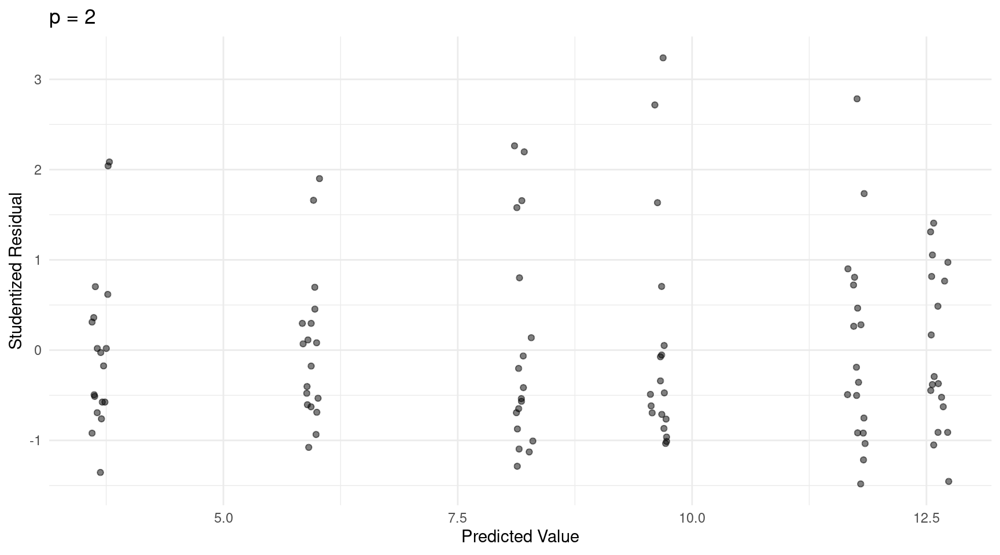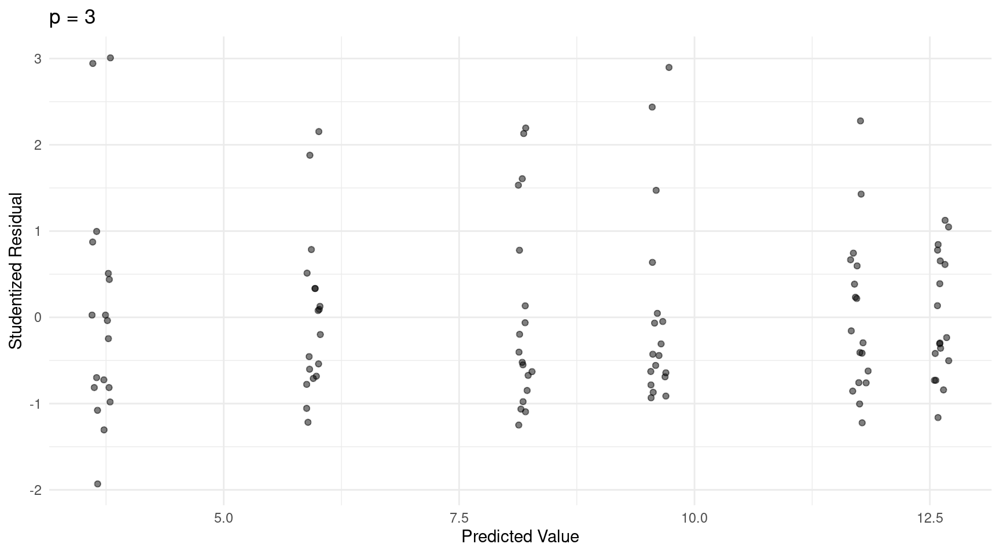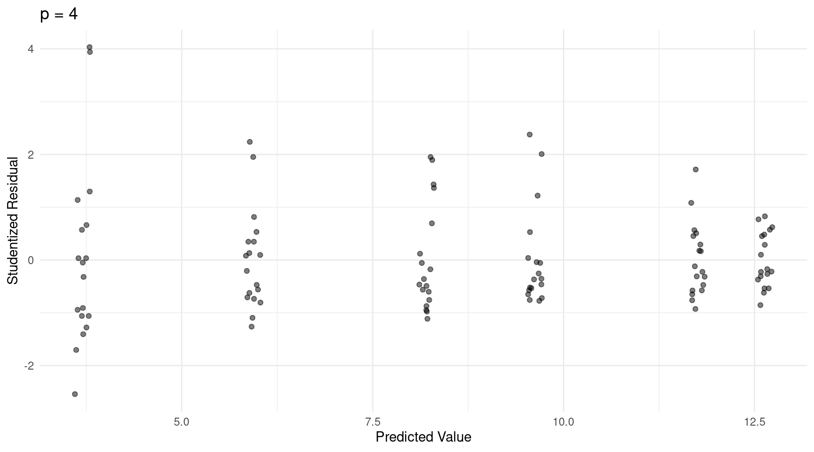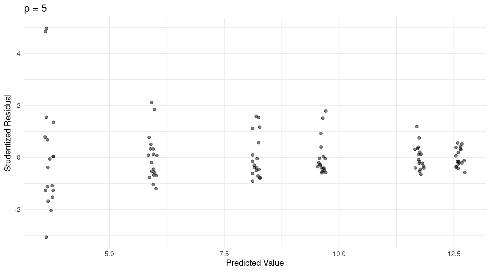 I would say \(p\) = 2 might be the best choice here. Here I will estimate the model using weighted least squares and repeat the inferences.
ironretention$w <- 1
for (i in 1:10) {
m <- lm(retention ~ concf + ion + concf:ion,
data = ironretention, weights = w)
ironretention$yhat <- predict(m)
ironretention$w <- with(ironretention, 1 / ((yhat/100)^2 * (1 - yhat/100)^2))
}
summary(m)$coefficients Estimate Std. Error t value Pr(>|t|)
(Intercept) 11.7500 1.563 7.5163 2.245e-11
concf1.2 -3.5461 1.932 -1.8354 6.936e-02
concf10.2 -8.0511 1.653 -4.8708 4.078e-06
ionferrous 0.8894 2.284 0.3895 6.977e-01
concf1.2:ionferrous 0.5389 2.868 0.1879 8.513e-01
concf10.2:ionferrous 1.3483 2.492 0.5410 5.897e-01trtools::contrast(m, a = list(concf = c("0.3","0.3","1.2","1.2","10.2","10.2"),
ion = c("ferric","ferrous","ferric","ferrous","ferric","ferrous")),
cnames = c("ferric,0.3","ferrous,0.3","ferric,1.2","ferrous,1.2",
"ferric,10.2","ferrous,10.2")) estimate se lower upper tvalue df pvalue
ferric,0.3 11.750 1.5633 8.649 14.851 7.516 102 2.245e-11
ferrous,0.3 12.639 1.6647 9.338 15.941 7.593 102 1.540e-11
ferric,1.2 8.204 1.1353 5.952 10.456 7.226 102 9.293e-11
ferrous,1.2 9.632 1.3123 7.029 12.235 7.340 102 5.324e-11
ferric,10.2 3.699 0.5370 2.634 4.764 6.888 102 4.758e-10
ferrous,10.2 5.937 0.8419 4.267 7.607 7.052 102 2.162e-10trtools::contrast(m,
a = list(concf = c("0.3","1.2","10.2"), ion = "ferrous"),
b = list(concf = c("0.3","1.2","10.2"), ion = "ferric"),
cnames = c(0.3, 1.2, 10.2)) estimate se lower upper tvalue df pvalue
0.3 0.8894 2.2836 -3.6401 5.419 0.3895 102 0.69773
1.2 1.4283 1.7352 -2.0135 4.870 0.8231 102 0.41235
10.2 2.2378 0.9986 0.2571 4.218 2.2410 102 0.02719For this particular model the point estimates are the same, but the standard errors have changed (some smaller and some larger).18 Changes in the standard errors also impacts confidence intervals and test statistics.
Since the explanatory variables are categorical and there are multiple observations per treatment condition, another approach to dealing with the heteroscedasticity is to let the variance vary over the treatment conditions so that \[ \text{Var}(Y_i) = \begin{cases} \sigma_1^2, & \text{if the concentration is 0.3 and the ion is ferric}, \\ \sigma_2^2, & \text{if the concentration is 1.2 and the ion is ferric}, \\ \sigma_3^2, & \text{if the concentration is 10.2 and the ion is ferric}, \\ \sigma_4^2, & \text{if the concentration is 0.3 and the ion is ferrous}, \\ \sigma_5^2, & \text{if the concentration is 1.2 and the ion is ferrous}, \\ \sigma_6^2, & \text{if the concentration is 10.2 and the ion is ferrous}. \end{cases} \] If these variances were known then the weights for the observations in each treatment condition would be the reciprocals of these variances (e.g., the weight for the observations in the first treatment condition would be \(w_i = 1/\sigma_1^2\)). These variances are not known but can be estimated from the data. Use the sample variances from the six treatment conditions (i.e., \(s_1^2, s_2^2, \dots, s_6^2\)) to create weights and estimate the model using weighted least squares with these weights. Repeat what you did in the first problem and comment briefly on if and how your inferences changed.
Solution: Here we compute the weights based on the sample variances.
library(dplyr)
ironretention <- ironretention %>% group_by(concf,ion) %>%
mutate(w = 1 / var(retention))
m <- lm(retention ~ concf + ion + concf:ion,
data = ironretention, weights = w)
summary(m)$coefficients Estimate Std. Error t value Pr(>|t|)
(Intercept) 11.7500 1.657 7.0931 1.771e-10
concf1.2 -3.5461 2.096 -1.6919 9.371e-02
concf10.2 -8.0511 1.724 -4.6691 9.240e-06
ionferrous 0.8894 2.191 0.4060 6.856e-01
concf1.2:ionferrous 0.5389 2.989 0.1803 8.573e-01
concf10.2:ionferrous 1.3483 2.338 0.5767 5.654e-01trtools::contrast(m, a = list(concf = c("0.3","0.3","1.2","1.2","10.2","10.2"),
ion = c("ferric","ferrous","ferric","ferrous","ferric","ferrous")),
cnames = c("ferric,0.3","ferrous,0.3","ferric,1.2","ferrous,1.2",
"ferric,10.2","ferrous,10.2")) estimate se lower upper tvalue df pvalue
ferric,0.3 11.750 1.6566 8.464 15.036 7.093 102 1.771e-10
ferrous,0.3 12.639 1.4336 9.796 15.483 8.817 102 3.353e-14
ferric,1.2 8.204 1.2840 5.657 10.751 6.390 102 5.036e-09
ferrous,1.2 9.632 1.5771 6.504 12.760 6.107 102 1.858e-08
ferric,10.2 3.699 0.4787 2.749 4.648 7.727 102 7.925e-12
ferrous,10.2 5.937 0.6616 4.624 7.249 8.974 102 1.514e-14trtools::contrast(m,
a = list(concf = c("0.3","1.2","10.2"), ion = "ferrous"),
b = list(concf = c("0.3","1.2","10.2"), ion = "ferric"),
cnames = c(0.3, 1.2, 10.2)) estimate se lower upper tvalue df pvalue
0.3 0.8894 2.1907 -3.4558 5.235 0.4060 102 0.685589
1.2 1.4283 2.0337 -2.6055 5.462 0.7023 102 0.484070
10.2 2.2378 0.8166 0.6181 3.857 2.7404 102 0.007245Similarly to when using iteratively weighted least squares, using these weights does not affect the point estimates but it does impact the standard errors and thus confidence intervals and test statistics.
Note: This problem is extra credit for students in Stat 436, but required for students in Stat 516.
This problem concerns data from a study of the effects of varying
doses and sources of methionine (an essential amino acid) on the growth
of young turkeys.19 The data are not, to my knowledge,
included in an existing R package, but they can be entered into a data
frame called turkeys as follows.
turkeys <- data.frame(
weight = c(674, 764, 795, 796, 826, 782, 834, 836, 830),
pens = c(10, 5, 2, 2, 5, 5, 2, 2, 5),
dosea = c(c(0, 0.12, 0.22, 0.32, 0.44), rep(0, 4)),
doseb = c(rep(0, 5), c(0.12, 0.22, 0.32, 0.44))
)
turkeys weight pens dosea doseb
1 674 10 0.00 0.00
2 764 5 0.12 0.00
3 795 2 0.22 0.00
4 796 2 0.32 0.00
5 826 5 0.44 0.00
6 782 5 0.00 0.12
7 834 2 0.00 0.22
8 836 2 0.00 0.32
9 830 5 0.00 0.44Each observation of weight is the average weight (in
grams) of a given number of pens, where each pen contained
15 turkeys. The turkeys in a given pen were given a dose of one of two
sources of methionine, with the doses recorded as the percent of the
total diet. Note that 10 pens were not given any additional methionine.
The researchers varied the number of pens for a given dose as part of an
optimal experimental design. To plot these data it is useful to create a
couple of new variables.
library(dplyr)
turkeys <- turkeys %>%
mutate(dose = dosea + doseb) %>%
mutate(source = case_when(
dose == 0 ~ "none",
dosea > 0 ~ "a",
doseb > 0 ~ "b")
)
turkeys weight pens dosea doseb dose source
1 674 10 0.00 0.00 0.00 none
2 764 5 0.12 0.00 0.12 a
3 795 2 0.22 0.00 0.22 a
4 796 2 0.32 0.00 0.32 a
5 826 5 0.44 0.00 0.44 a
6 782 5 0.00 0.12 0.12 b
7 834 2 0.00 0.22 0.22 b
8 836 2 0.00 0.32 0.32 b
9 830 5 0.00 0.44 0.44 blibrary(ggplot2)
p <- ggplot(turkeys, aes(x = dose, y = weight, color = source)) +
theme_minimal() + geom_point(aes(size = pens)) +
scale_size(breaks = c(2, 5, 10)) +
labs(x = "Dose of Methionine (% of diet)", y = "Mean Weight (g)",
color = "Source", size = "Number of Pens")
plot(p)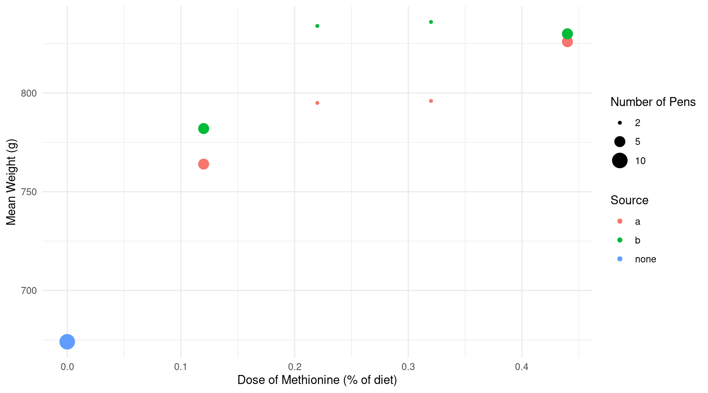 Here you will consider modeling expected mean weight as a function of dose and source of methionine, while also accounting the number of pens used for mean weight. The basic model you will be using has the form \[ E(W) = \alpha + (\gamma - \alpha)2^{-d/\lambda}, \] where \(W\) is the (mean) weight and \(d\) is dose of methionine. Here \(\alpha\) is the asymptote representing the expected weight approached as \(d\) is increases, \(\gamma\) is the expected weight when no methionine is given, and \(\lambda\) is a “half-life” parameter interpreted as the dose of methionine that results in an expected weight half way between \(\gamma\) and \(\alpha\) so that if \(d = \lambda\) then \(E(W) = (\alpha + \gamma)/2\). But here you will be extending this model to account for modeling different sources of methionine. The assumption will be that if the biopotency of methionine varies depending on the source, then this will be reflected in differences in the value of \(\lambda\).
Because the number of pens used to compute the average weight varied by dose, the variance of the average weight will be inversely proportional to the number of pens — i.e., \(\text{Var}(Y_i) \propto 1/n_i\) where \(n_i\) is the number of pens averaged for the \(i\)-th observation (similar to the example from lecture on 2/17). So in what follows use the number of pens to specify weights to estimate the model parameters using weighted least squares.
Consider the regression model \[
E(W_i) =
\begin{cases}
\gamma, & \text{if no methionine was given}, \\
\alpha + (\gamma - \alpha)2^{-d_i/\lambda_a}, &
\text{if methionine was given from source $a$}, \\
\alpha + (\gamma - \alpha)2^{-d_i/\lambda_b}, &
\text{if methionine was given from source $b$}.
\end{cases}
\] Note that if the dose is zero then the expected weight is
\(\gamma\), since \(\alpha + (\gamma - \alpha)2^{-d/\lambda} =
\gamma\) if \(d = 0\). Estimate
this model using the nls function and report the parameter
estimates by giving the output from summary.20 I would recommend
using the case_when function from the
dplyr package to specify this model in
nls. Plot the model with the raw data. Finally, use the
lincon function to determine if there is a statistically
significant difference between \(\lambda_a\) and \(\lambda_b\), meaning that the biopotency of
methionine does depend on the source (assume a significance level of
\(\alpha\) = 0.05).
Solution: Here is how we can estimate the model. I guessed the starting values from the plot.
library(dplyr)
m <- nls(weight ~ case_when(
source == "none" ~ gamma,
source == "a" ~ alpha + (gamma - alpha) * 2^(-dose/lambdaa),
source == "b" ~ alpha + (gamma - alpha) * 2^(-dose/lambdab)),
start = list(alpha = 825, gamma = 675, lambdaa = 0.1, lambdab = 0.1),
data = turkeys, weights = pens)
summary(m)$coefficients Estimate Std. Error t value Pr(>|t|)
alpha 834.78331 6.7761 123.195 6.684e-10
gamma 674.30393 5.5420 121.671 7.113e-10
lambdaa 0.10997 0.0163 6.746 1.086e-03
lambdab 0.06857 0.0117 5.860 2.051e-03Here is a plot of the model.
d <- expand.grid(source = c("none","a","b"), dose = seq(0, 0.44, length = 100))
d$yhat <- predict(m, newdata = d)
p <- ggplot(turkeys, aes(x = dose, y = weight, color = source)) +
geom_line(aes(y = yhat), data = d) +
theme_minimal() + geom_point(aes(size = pens)) +
scale_size(breaks = c(2, 5, 10)) +
labs(x = "Dose of Methionine (% of diet)", y = "Mean Weight (g)",
color = "Source", size = "Number of Pens")
plot(p)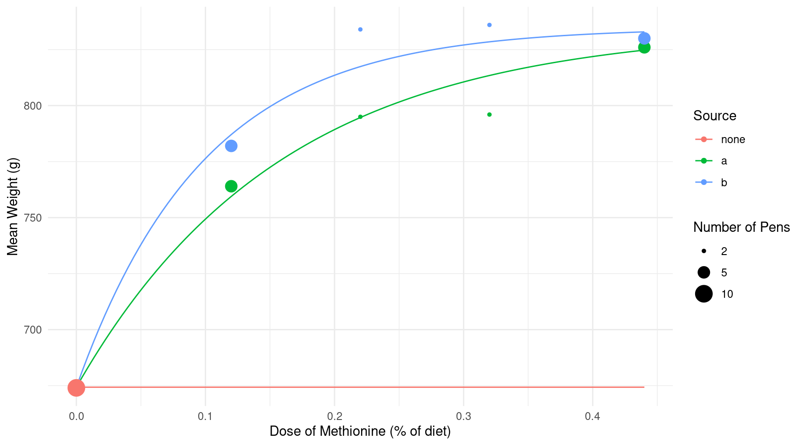 The plot looks a little goofy since if the source is “none” then dose must be zero. We could fix this by editing the data used for plotting the curves by setting the dose to zero if source is “none”.
library(dplyr)
d <- d %>% mutate(dose = ifelse(source == "none", 0, dose))
d$yhat <- predict(m, newdata = d)
p <- ggplot(turkeys, aes(x = dose, y = weight, color = source)) +
geom_line(aes(y = yhat), data = d) +
theme_minimal() + geom_point(aes(size = pens)) +
scale_size(breaks = c(2, 5, 10)) +
labs(x = "Dose of Methionine (% of diet)", y = "Mean Weight (g)",
color = "Source", size = "Number of Pens")
plot(p)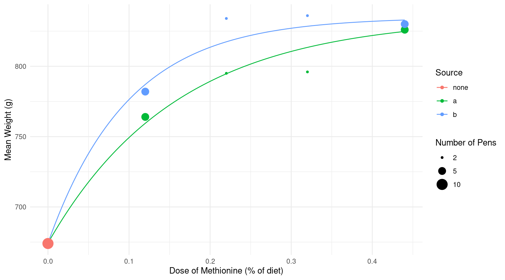 Note that you could use this without using the dplyr package with the following.
d$dose[d$source == "none"] <- 0Here is the test of the difference between \(\lambda_a\) and \(\lambda_b\).
lincon(m, a = c(0,0,1,-1)) estimate se lower upper tvalue df pvalue
(0,0,1,-1),0 0.0414 0.01448 0.004183 0.07861 2.86 5 0.03543The half-life parameter is significantly higher for source b.
Another way to write the model that avoids having to explicitly
write the model case-wise is \[
E(W_i) = \alpha + (\gamma - \alpha)2^{-(a_i/\lambda_a +
b_i/\lambda_b)},
\] where \(a_i\) and \(b_i\) are the doses of methionine from
sources \(a\) and \(b\), respectively (i.e., these are the
variables dosea and doseb in the data frame).
Estimate this model using the nls function and report the
parameter estimates using the output from summary. You
should get the same results as you obtained in the previous problem.
Source: We can estimate this parameterization of the model as follows.
m <- nls(weight ~ alpha + (gamma - alpha) * 2^(-(dosea/lambdaa + doseb/lambdab)),
start = list(alpha = 825, gamma = 675, lambdaa = 0.1, lambdab = 0.1),
data = turkeys, weights = pens)
summary(m)$coefficients Estimate Std. Error t value Pr(>|t|)
alpha 834.78331 6.7761 123.195 6.684e-10
gamma 674.30393 5.5420 121.671 7.113e-10
lambdaa 0.10997 0.0163 6.746 1.086e-03
lambdab 0.06857 0.0117 5.860 2.051e-03Note that the inferences are the same.
I have sometimes toyed with the idea of
starting the class by teaching students to use nls
rather than lm to help them better appreciate and
understand what lm is doing for them.↩︎
Note that here you may want to use ALA::rat
to refer to the data frame because there is a data frame of the same
name in the alr3 package which you will be using in a
later problem. If you load the alr3 package after the
ALA package during the same R session then you run into
a name conflict. Using ALA::rat avoids that problem.↩︎
Source: Ekstrom, C. T. & Sorensen, H. (2010). Introduction to statistical data analysis for the life sciences. CRC Press.↩︎
It could, in principle, be done using indicator
variables or even the ifelse function, but the code would
be more complex.↩︎
A plot like this is a good way to determine if you made significant mistake in estimating your model. If you do not produce curves that look consistent with the raw data you may have made a mistake.↩︎
We could alternatively write the model as \[ E(R_i) = \frac{\alpha s_i}{\lambda_i + s_i}, \] where \(\lambda_i = \lambda_0(1 + h_i/\kappa)\) to show how the half-life parameter \(\lambda_i\) is now indexed by the observation since it depends on the inhibitor concentration, \(h_i\).↩︎
To see why we can interpret \(\kappa\) this way, note that if \(h_i = \kappa\) then \(\lambda_0(1 + h_i/\kappa) = 2\lambda_0\).↩︎
To specify your starting values try the following strategy. The \(\alpha\) parameter is the asymptote for the curve, regardless of the inhibitor concentration, so you can guess this from the plot of the raw data. And because \(\lambda_0\) is the value of the half-life parameter when the concentration is zero, you can guess this from the plot or use an estimate from one of the previous models. For \(\kappa\) try guessing the value of the half-life parameter when the inhibitor concentration is at, say, \(h_i = 50\), or use an estimate from one of the previous models. Call this guess/estimate \(\hat\lambda_1\). We have that \(\lambda_1 = \lambda_0(1 + 50/\kappa)\). Replace \(\lambda_0\) and \(\lambda_1\) in that expression with guesses/estimates as described above and then solve for \(\kappa\) to get a starting value for that parameter.↩︎
Source: Cook, R. D. & Jacobsen, J. O. (1978). Analysis of the 1977 West Hudson Bay snow goose surveys. Unpublished report, Canadian Wildlife Service.↩︎
The alr3 package was replaced with a
newer package, alr4, but unfortunately the
snowgeese data are not included with this newer package.↩︎
Rice, J. A. (1998). Mathematical statistics and data analysis. Pacific Grove, CA: Wadsworth & Brook/Cole.↩︎
Note the use of the position argument in
geom_point. Without that argument the points denoting the
ion would be in the same position over the abscissa. But by specifying
position = position_dodge(width = 0.25) we “dodge” the
points by moving them slightly sideways (with the amount determined by
the width argument to position_dodge).↩︎
Notice that the variable ion is not a
factor but is instead a character (chr) variable
(i.e., a word or phrase, what is sometimes called a “string”). A
character variable is not treated quite the same as a factor in R, and
sometimes this is an issue, but most regression modeling functions will
automatically convert a character variable to a factor when they are
used in the model formula so the distinction is not generally a concern
unless we try to use functions to manipulate the variable that are
specifically designed for factors (e.g., level,
reorder, and the functions in the forcats
package).↩︎
Models with interactions can often be confusing and intimidating. The parameterization that is used by default is selected largely for computational convenience, and to some degree by tradition. Perhaps a simpler way to look at this model is with an alternative parameterization.
m <- lm(retention ~ -1 + concf:ion, data = ironretention)
summary(m)$coefficients Estimate Std. Error t value Pr(>|t|)
concf0.3:ionferric 11.750 1.265 9.288 3.061e-15
concf1.2:ionferric 8.204 1.265 6.485 3.220e-09
concf10.2:ionferric 3.699 1.265 2.924 4.259e-03
concf0.3:ionferrous 12.639 1.265 9.991 8.511e-17
concf1.2:ionferrous 9.632 1.265 7.614 1.386e-11
concf10.2:ionferrous 5.937 1.265 4.693 8.400e-06Here there is effectively an indicator variable (formed as the
product of two indicator variables) for each combination of
concentration and ion, so the model can be written case-wise as \[
E(Y_i) =
\begin{cases}
\beta_1, & \text{if the concentration is 0.3 and the ion is
ferric}, \\
\beta_2, & \text{if the concentration is 1.2 and the ion is
ferric}, \\
\beta_3, & \text{if the concentration is 10.2 and the ion is
ferric}, \\
\beta_4, & \text{if the concentration is 0.3 and the ion is
ferrous}, \\
\beta_5, & \text{if the concentration is 1.2 and the ion is
ferrous}, \\
\beta_6, & \text{if the concentration is 10.2 and the ion is
ferrous}.
\end{cases}
\] Note that this is the same model, just written (i.e.,
parameterized) differently. But this parameterization shows that a model
with two categorical variables and an interaction between them
effectively treats each distinct combination of categories as a
category, so we can view this model as one with one factor
formed by the six combinations of the levels of two factors. Fortunately
when we are using functions like contrast or
emmeans for inferences we do not need to be too concerned
about the specific parameterization.↩︎
If \(Y_i\) is a proportion so that \(0 \le Y_i \le 1\), the division by 100 is omitted so that \(\text{Var}(Y_i) \propto E(Y_i)^p[1-E(Y_i)]^p\).↩︎
Because these weights are a more complicated function
of the predicted values you might find it useful to compute the weights
in a couple of steps where you first save the predicted values to the
data frame and then you compute the weights using the with
function so that you do not need to write
ironretention$yhat to reference the predicted values. Here
is how that would look like for the example in class on 2/24.
daphniastrat$yhat <- predict(m) # save predicted values
daphniastrat$w <- with(daphniastrat, 1/yhat) # compute weightsNote that you will compute the weights differently here and not use
1/yhat.↩︎
Although we are only considering integer values of \(p\), it could be any real number (e.g., \(p\) = 1.5).↩︎
Whether weights affect point estimates depends on the model. Usually they do unless all explanatory variables are categorical and all interactions are included in the model.↩︎
Source: Noll, S. L., Waibel, P. E., Cook, R. D., & Witmer, J. A. (1984). Biopotency of methionine sources for young turkeys. Poultry Science, 63, 2458–2470.↩︎
The models you are estimated here may be somewhat
sensitive to specifying good starting values. If you have difficulties I
would recommend that you start by not estimating \(\lambda_a\) and \(\lambda_b\) but instead insert values in
the model based on guessing their values from the plot (similar to how I
guessed the value of the \(h\)
parameter for the ToothGrowth data from lecture). Then use
the estimates of \(\alpha\) and \(\gamma\) you get as starting values for
those parameters, and your guesses of \(\lambda_a\) and \(\lambda_b\) as starting values for those
parameters, and proceed to estimate the model with all four unknown
parameters.↩︎